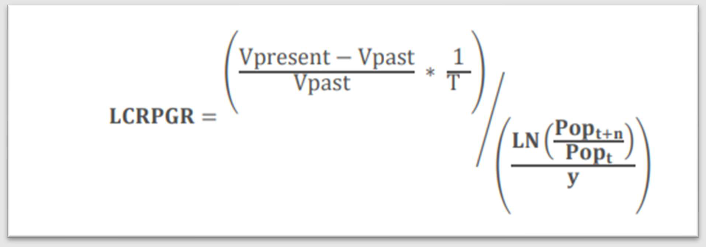

Introduction
SDG indicator 11.3.1
SDG indicator 11.3.1 measures progress towards Target 11.3: By 2030, enhance inclusive and sustainable urbanization and capacity for participatory, integrated and sustainable human settlement planning and management in all countries under Goal 11: Make cities and human settlements inclusive, safe, resilient and sustainable.
This indicator is vital for understanding the sustainability and inclusiveness of urban growth, comparing how quickly land is being consumed relative to population growth. A ratio greater than 1 suggests that land is being consumed faster than the population is growing, potentially indicating unsustainable sprawl. A ratio less than 1 suggests densification of population.
The calculation of this indicator requires high-resolution data on population (such as geocoded, gridded data, or population data at small administrative units) and built-up areas for two or more distinct time periods. For computing land consumption and population growth rates, using analysis periods of 3, 5, or 10 years apart is preferred, especially when built-up area analysis is conducted using medium to high-resolution satellite imagery (e.g., Landsat and Sentinel). For this guide, the time period used is 2017 – 2020 for the relevant datasets.
The ratio of land consumption rate to population growth rate (LCR_PGR) is calculated using the following formula:

Where:
- Vpresent: Built-up area at the end of the analysis period (km2)
- Vpast: Built-up area at the beginning of the analysis period (km2)
- T: Time in number of years in the analysis period (e.g., T=3 for 2017-2020)
- Popt+n: Total population at the end of the analysis period
- Popt: Total population at the beginning of the analysis period
- Y: Number of years in the analysis period (same as T)
- ln: Natural logarithm
Key components of the indicator:
- Land Consumption Rate (LCR): This is the rate at which urbanized land, or land occupied by a city/urban area, changes during a period of time (usually one year), expressed as a percentage of the land occupied by the city/urban area at the start of that time.
- Population Growth Rate (PGR): This represents the change of a population in a defined urban area (city, etc.) during a specific period, usually annualized. It reflects the number of births and deaths during a period and the number of people migrating to and from the focus area. For SDG 11.3.1, this is computed for the area defined as urban/city.
Key data inputs and considerations:
Input datasets used in this guide combine raster (grid) and vector geospatial formats. The methodology is comprehensive and can be applied with national proprietary (public or private access) geospatial datasets, or with global open-source datasets used in this guide.
1. Analytical geography – DEGURBA urban areas:
Definition: The Degree of Urbanisation (DEGURBA) is a classification that indicates the character of an area by classifying the territory of a country along an urban-rural continuum. It defines the specific urban/city boundaries for which both Land Consumption Rate and Population Growth Rate are calculated.
Considerations: For this guide, the DEGURBA Bishkek dataset (for 2020) was derived using automated tools offered at the official Copernicus data portal. It used the WorldPop global population data (resampled from 100x100 m to meet the 1 km resolution requirements) and Esri Living Atlas built-up data. These were processed and referenced into a common coordinate system (UTM 44N). The resulting dataset of Bishkek urban areas for 2020 serves as the analytical geography for this guide.
NOTE: This guide contains information on datasets for other major cities. The download section of this guide also offers DEGURBA delimitation for other major cities, where available.
2. Land Consumption Rate data – Built-up area information:
Source: Esri Living Atlas Land Use Land Cover data. This data is available from the official webpage for years 2017-2022, both as a downloadable raster and a GIS web service.
Considerations: For this guide, datasets for 2017 and 2020 were used. These were accessed from the Esri open GIS portal, which offers an annual 10-meter resolution map of Earth’s land surface from 2017-2022. Other global alternatives for Land Use Land Cover, such as Dynamic World Global 10-m Land Cover Data or GlobeLand30 30-meter Global Land Cover, could serve the purpose of incorporating longer time series. Alternatively, national Land Use Land Cover datasets may be available, developed using machine learning (ML) algorithms over high-resolution imagery (e.g., using QGIS add-on instruments from Copernicus – Sentinel Hub, or UNHabitat tutorials using Google Earth Engine).
3. Population Growth Rate data – Population estimates:
Source: Kyrgyzstan population estimates for 2017 and 2020, available via the WorldPop data hub. This data, in raster format, provides the spatial distribution of the population (total number of people per grid cell, e.g., 100x100 m) for the relevant time periods.
Considerations: Population Growth Rate will be calculated as an annualized value for the specified time period (e.g., 3 years for 2017-2020). The use of national geocoded population datasets of high accuracy (e.g., to building level) is recommended to obtain more accurate index values. Creating population spatial grids based on national census data and adopting this methodology can yield advanced spatial insights and facilitate further in-depth analysis related to land consumption and population dynamics in urban areas.
Spatial reference system
All datasets utilized in this guide share a common spatial reference system (e.g., WGS 1984 UTM Zone 44N for the Kyrgyzstan example). When using alternative data sources, it is critically important to ensure all datasets are projected to a consistent and appropriate spatial reference system relevant to your country or region for accurate geospatial processing.
Input geodata sources (examples)
The table below provides examples of the input geodata used in this guide. Users are expected to identify and procure equivalent open or national authoritative datasets for their specific region. For the Kyrgyzstan case study, example data links are provided.
Table 1: Input geodata used in this guide
| Geodata | Name of geodata | National/Open Data | Link |
|---|---|---|---|
| Administrative | |||
| DEGURBA Bishkek urban area 2020 (derived as per the step-by-step guide on DEGURBA) | GHS-DUG_URBAN_CENTRE_UTM44N.shp | National | SDG 11.3.1 input data |
| DEGURBA urban areas for 7 cities of Kyrgyzstan 2020 (derived as per the step-by-step guide on DEGURBA) | DEGURBA_all_43UTM_final7.shp | National | SDG 11.3.1 input data |
| Chuy region | Chuy_UTM44N.shp | National | SDG 11.3.1 input data |
| Land consumption | |||
| Land Use Land Cover dataset from Esri for 2017 – mosaic raster dataset | LULC_2017_mozaica.tif | Open | SDG 11.3.1 input data |
| Land Use Land Cover dataset from Esri for 2020 – mosaic raster dataset | LULC_2020_Mozaica.tif | Open | SDG 11.3.1 input data |
| Population growth | |||
| WorldPop Population (100x100 m) for Kyrgyzstan 2017, Chuy region | Population2017_Chuy.tif | Open | SDG 11.3.1 input data |
| WorldPop Population (100x100 m) for Kyrgyzstan 2020, Chuy region | Population2020_Chuy.tif | Open | SDG 11.3.1 input data |
Upon completion of the guide you can assess your results against the outputs from the actual project with all deliverables and geospatial datasets available via this link.